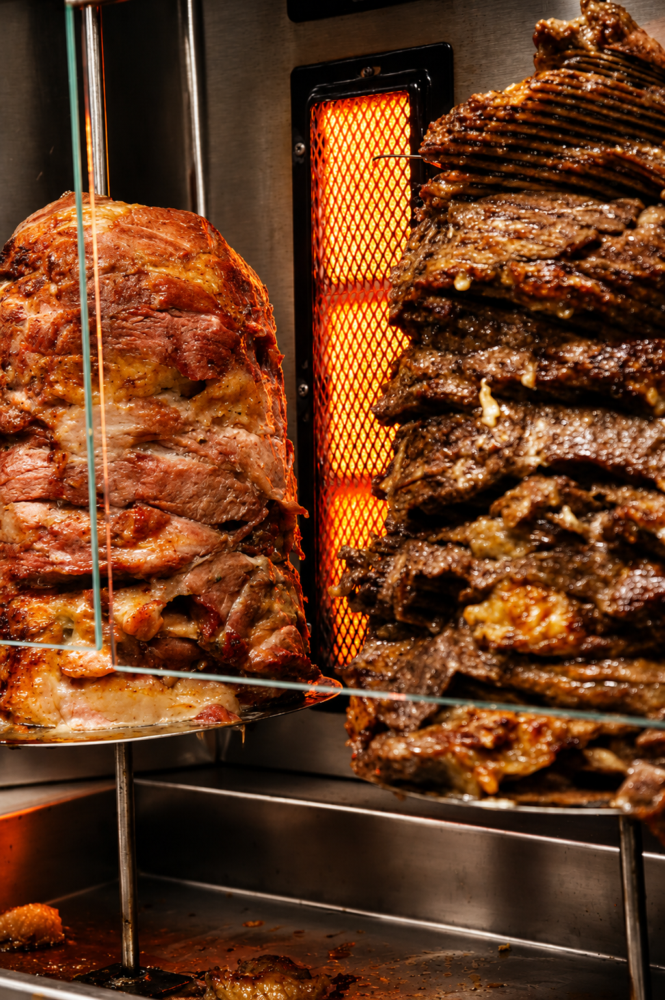
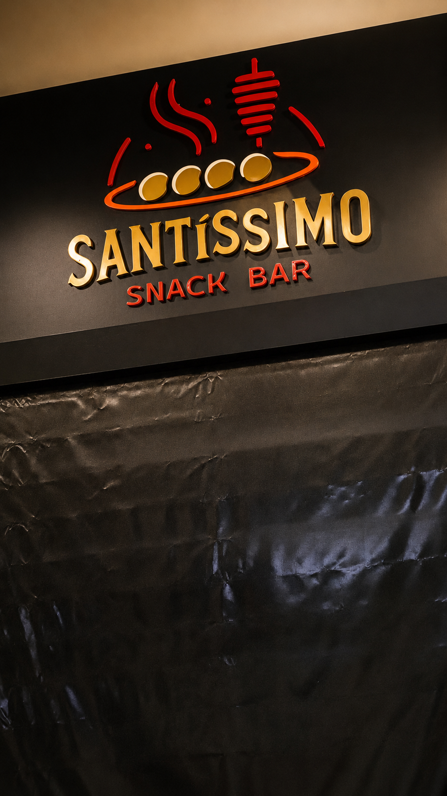
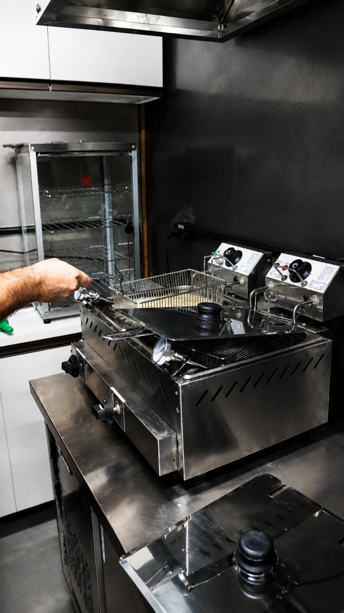

STREET FOOD NO ESPETO VERTICAL

Inspirado na tradição libanesa e na street food do Oriente Médio, o Santíssimo traz uma experiência artesanal preparada diariamente.
Ao lado da tradicional loja da Cachaça Santa Terezinha surgiu a frase: "Ao lado de todo Santíssimo existe uma Santa."

Uma das maiores street foods do mundo: carnes marinadas, assadas lentamente no espeto vertical e servidas em pão artesanal.
R$ 27,90
Frango • Boi • Misto
Alface, tomate, cebola roxa, batata frita e molho alho ou barbecue.
R$ 15,00
Pão artesanal da casa com molho pesto.
R$ 20,90
Banoffee • Nutella + Morango
Preparadas no espeto vertical e servidas no prato.
Boi R$20 • Frango R$15 • Mista R$18

Bolinhos de salmão, polvo, porco, boi e frango.
Experiências sazonais. Consulte a disponibilidade.
Rua Licínio dos Santos Conte, 51 - Loja 32 | Vitória - ES
WhatsApp: (27) 99851-2036